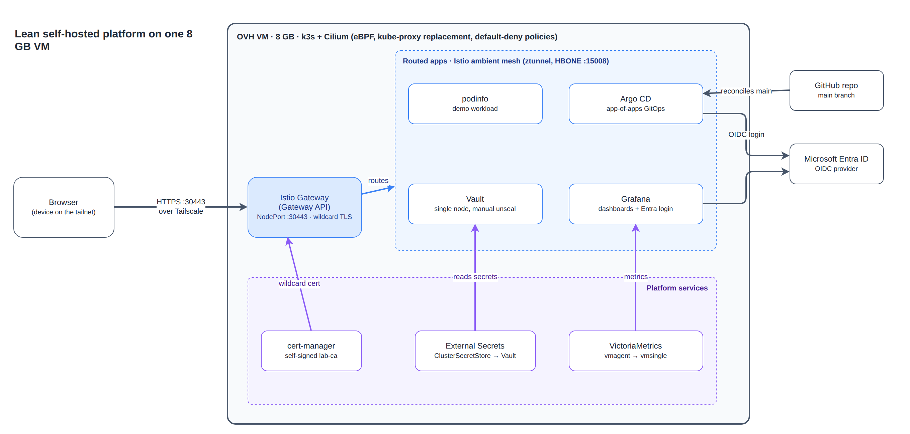
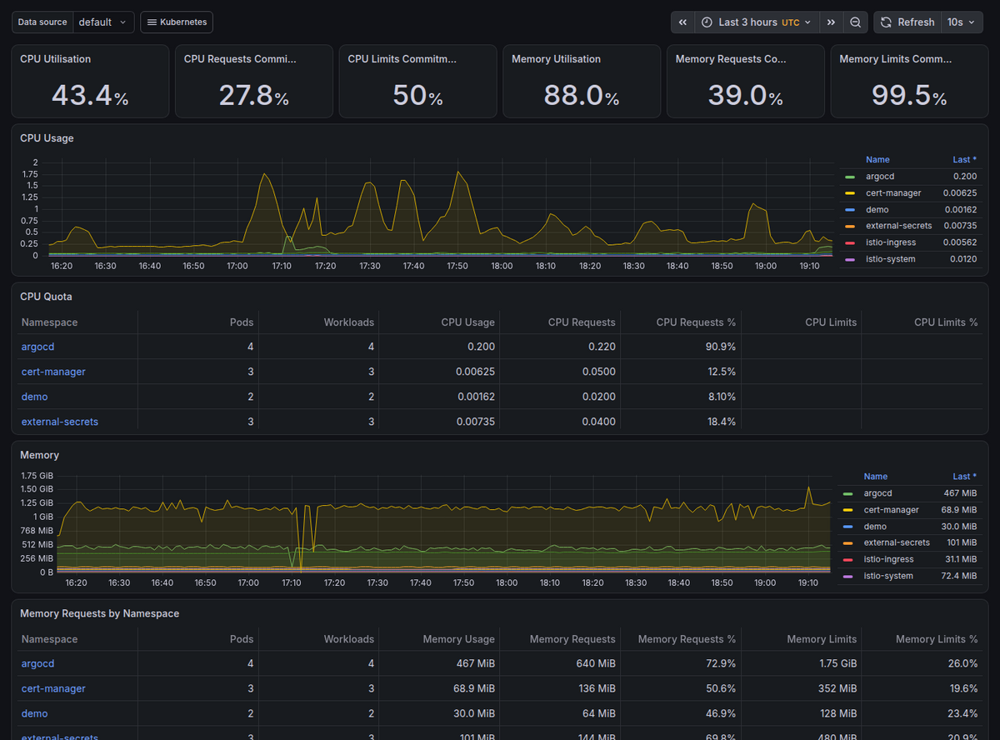

I have one OVH VM with 8 GB of RAM, and I wanted to run something on it that looks like a real platform: GitOps, a service mesh, Vault, metrics and single sign-on. It works now. Argo CD syncs 15 apps from Git, Grafana and Argo CD both log in through Entra ID, and nothing is reachable from the internet. It also took a lot of failed attempts, and the node is running at about 90% memory, so this is more a story about squeezing things in than about a clean reference setup.
The whole thing lives in a private repo with 33 merged pull requests. I made a rule early on that every change is its own small PR, and it paid off more than I expected. When something broke, the fix was a short diff I could actually review.
What it looks like

The base is k3s with flannel, kube-proxy, Traefik and servicelb turned off, and Cilium doing the networking and network policy. Istio runs in ambient mode, with the Gateway API for ingress. Argo CD installs everything else from Git. cert-manager issues a wildcard certificate from a self-signed CA. Vault and External Secrets handle secrets, and VictoriaMetrics with Grafana handle metrics. podinfo is the demo app I use to check that traffic gets all the way through.
Access goes through Tailscale. The gateway sits on NodePort 30443 and I only reach it over the tailnet. For hostnames I used nip.io, so grafana.<tailnet-ip>.nip.io resolves straight to the tailnet address. That gave me proper hostnames and TLS without touching a DNS registrar.
Why these choices
Memory drove most of it. Istio ambient instead of sidecars means one ztunnel per node, not an extra proxy in every pod, and on 8 GB that difference is real. Cilium replaces both flannel and kube-proxy, so there's one thing to learn and run instead of three. I picked the Gateway API over Traefik because Istio implements it, even though there were fewer examples to copy from.
Vault is a single node with one unseal key, and I unseal it by hand after every reboot. That's annoying and I wouldn't do it in production, but it's the smallest footprint and it keeps secrets out of Git, which was the point. The self-signed CA means browsers complain until you trust it. I decided I could live with that on a private lab.

What broke
The firewall ate the CNI
For a while I had a node that looked completely healthy where pods couldn't talk to anything. The cause was UFW. It was dropping traffic on Cilium's interfaces, cilium_host and the lxc* devices, and nothing in Kubernetes told me. Two rules fixed it:
sudo ufw allow in on cilium_host
sudo ufw allow in on lxc+If networking fails with no errors, look at the host firewall before the CNI.
A DNS policy that blackholed DNS
External Secrets kept reporting ClusterSecretStore InvalidProviderConfig with context deadline exceeded. It looked like a Vault problem, but the Vault login was timing out because DNS queries weren't getting answered. My baseline policy used Cilium's L7 DNS rules, and in namespaces outside the ambient mesh those rules dropped the queries. I switched to plain L4 egress on port 53 and it started working. I tested that in a scratch namespace first, because I'd already broken enough shared policy by then.
# before (simplified): L7 DNS rules, queries were dropped
toPorts:
- ports: [{port: "53", protocol: ANY}]
rules: {dns: [{matchPattern: "*"}]}
# after: L4 only
egress:
- toEndpoints:
- matchLabels:
io.kubernetes.pod.namespace: kube-system
k8s-app: kube-dns
toPorts:
- ports:
- {port: "53", protocol: ANY}Ambient needs two extra holes
podinfo returned 503 through the gateway even though the pod was fine. In ambient mode the gateway talks to workloads over HBONE on TCP 15008, and my default-deny policy was blocking it. Readiness probes failed for a related reason: the kubelet's probes arrive from the ztunnel SNAT address 169.254.7.127, which also had to be allowed.
ingress:
- fromEndpoints:
- matchLabels:
io.kubernetes.pod.namespace: istio-ingress
toPorts:
- ports:
- {port: "9898", protocol: TCP} # podinfo
- {port: "15008", protocol: TCP} # HBONE
- fromCIDR: ["169.254.7.127/32"] # kubelet probes via ztunnel SNATA request goes through Tailscale, the NodePort, the gateway, ztunnel and then the pod, and with default-deny every one of those hops needs its own rule.

Out of memory, repeatedly
This was the longest fight. Things got OOMKilled one after another: the Argo CD application controller, then VictoriaMetrics vmsingle, then vmagent, and finally Grafana. Grafana was in CrashLoopBackOff and the UI returned 503. It turns out it uses a lot of CPU and memory while loading its bundled dashboards, and my 256Mi limit wasn't enough.
Last State: Terminated
Reason: OOMKilled
Exit Code: 137I ended up doing two things. First, I gave every workload honest requests and limits, and raised Grafana's to 512Mi. Second, I dropped the kube-apiserver histogram series at scrape time. They have very high cardinality and I was never going to query them.
metricRelabelConfigs:
- action: drop
source_labels: [__name__]
regex: apiserver_request_(slo_)?duration_seconds_bucket|apiserver_response_sizes_bucket|apiserver_watch_events_sizes_bucketThe embarrassing part is that my own screenshot tooling was one of the culprits. A headless Chrome turned out to be the biggest process on the box more than once. I now kill it after every run.

Here is where the memory goes, as the working set per namespace from kubectl top once everything had settled:
| Namespace | What lives there | MiB |
|---|---|---|
| monitoring | VictoriaMetrics, vmagent, Grafana | 1,493 |
| argocd | Argo CD | 510 |
| kube-system | Cilium, CoreDNS, Hubble relay, metrics-server | 498 |
| external-secrets | External Secrets Operator | 125 |
| istio-system | istiod, ztunnel, istio-cni | 106 |
| cert-manager | cert-manager | 101 |
| vault | Vault | 60 |
| istio-ingress | Gateway | 36 |
| demo | podinfo | 32 |
| Pods total | 2,961 |
Monitoring is by far the biggest tenant. The k3s server process adds about 1.9 GiB on top, and the OS and Tailscale take the rest, which puts the node at roughly 6.3 GiB used.
Vault by hand
I initialised and unsealed Vault manually. The init output stays on the host and never goes near Git. External Secrets then reads from Vault through a ClusterSecretStore using Kubernetes auth. After a reboot Vault comes back sealed and I have to unseal it again. For a lab that's fine. For anything real I'd set up auto-unseal.

Single sign-on with Entra ID
Grafana and Argo CD both use Entra ID over OIDC. I create the client secrets in Entra, store them in Vault, and External Secrets delivers them to the pods, so they never show up in the repo. I hit a handful of small things along the way:
- Argo CD only resolves
$secretname:keyreferences from secrets labelledapp.kubernetes.io/part-of: argocd, so the ExternalSecret template has to add that label. - Calls made right after
az ad app createcan fail because the new app hasn't replicated yet. Retrying fixed it. - My tenant enforces MFA, so a plain
az loginwasn't enough. I needed--tenantwith--use-device-code. - Argo CD's own values are applied by Helm and not by Git, so changing them means running
helm upgradeon the node.
target:
template:
metadata:
labels:
app.kubernetes.io/part-of: argocd # required for $secret:key lookups
data:
- secretKey: client_secret
remoteRef: {key: entra/argocd, property: client_secret}
Where it falls short
It's one node, so there's no high availability. Vault has a single key share and I haven't tested a backup of it yet. Memory is so tight that adding anything means trimming limits somewhere else, which is why Datadog is switched off. And although the Entra button, the secrets and the redirect settings are all in place, I haven't yet completed a full interactive sign-in through it.
What's next
First I want to back up the Vault init material properly and look at auto-unseal. I also need to rotate the Entra client secrets before they expire in a year, and delete the initial Argo CD admin secret once I've confirmed SSO works.
If you've run Istio ambient or Cilium on a small node and hit different problems, I'd like to hear about it. Leave a comment below or find me on LinkedIn. The repo is private for now, but I'm happy to share parts of it if you ask.
I've removed or replaced the tailnet address, tenant and subscription IDs and all secrets. The screenshots are from the live cluster.